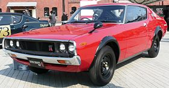

The Nissan Skyline GT-R is a sports car based on the Nissan Skyline range. The first cars named "Skyline GT-R" were produced between 1969 and 1972 under the model code KPGC10, and were successful in Japanese touring car racing events. This model was followed by a brief production run of second-generation cars, under model code KPGC110, in 1973.
After a 16-year hiatus, the GT-R name was revived in 1989 as the BNR32 ("R32") Skyline GT-R. Group A specification versions of the R32 GT-R were used to win the Japanese Touring Car Championship for four years in a row. The R32 GT-R also had success in the Australian Touring Car Championship, with Jim Richards using it to win the championship in 1991 and Mark Skaife doing the same in 1992, until a regulation change excluded the GT-R in 1993. The technology and performance of the R32 GT-R prompted the Australian motoring publication Wheels to nickname the GT-R "Godzilla" in its July 1989 edition. Wheels then carried the name through all the generations of Skyline GT-Rs, most notably the R34 GT-R, which they nicknamed "Godzilla Returns", and described as "The best handling car we have ever driven". In tests conducted by automotive publications, R34 GT-R have covered a quarter of a mile (402 metres) in 12.2 seconds from a standing start time and accelerated from 0–100 km/h (0–62 mph) in 4.4 seconds. It was one of the fastest accelerating production vehicles at the time.
The Skyline GT-R became the flagship of Nissan performance, showcasing many advanced technologies including the ATTESA E-TS All-wheel drive system and the Super-HICAS four-wheel steering. Today, the car is popular for import drag racing, circuit track, time attack and events hosted by tuning magazines. Production of the Skyline GT-R ended in August 2002. The car was replaced by the GT-R (R35), an all-new vehicle based on a enhanced platform of the Skyline V36 platform. Although visibly different, the two vehicles share similar design features and are manufactured in the same factory.
The Skyline GT-R was never manufactured outside Japan, and the sole export markets were Hong Kong, Singapore, Australia and New Zealand, in 1991, and the UK (in 1997, due to the Single Vehicle Approval scheme) as used Japanese imports.
Despite this, the car has become an iconic sports car as a Grey import vehicle, including in countries from the Western World (mainly the United Kingdom, Australia, New Zealand, South Africa, Ireland, Canada, and the United States). It has become notable through pop culture such as The Fast and the Furious, Initial D, Shakotan Boogie, Wangan Midnight, Need for Speed, Forza, Driving Emotion Type-S, Test Drive, and Gran Turismo. In 2019, Nismo announced that it would resume production of spare parts for all generations of the Skyline GT-R, including body panels and engines.
The car was named at the time by BBC's Top Gear as the only true Japanese contribution in the line of supercars, and by Jeremy Clarkson as one of the best cars in the world.
The first Skyline GT-R, known by the internal Nissan designation of PGC10, was introduced on 4 February 1969, and was exclusive to Japanese Nissan dealership network called Nissan Prince Store when the Prince company was integrated into Nissan operations in 1966. It was available originally as a four-door sedan after a public debut at the October 1968 Tokyo Motor Show. It was advertised alongside the Nissan R380 racecar to showcase the Skyline's racing heraldry. It was equipped with the 2.0 L DOHC S20 Inline-six engine rated at 119 kW (162 PS; 160 hp) at 7,000 rpm and 176 N⋅m (130 lb⋅ft) at 5,600 rpm. Power was delivered to the rear wheels by a 5-speed manual transmission and the car was equipped with a limited slip differential. The first Skyline GT-R rode on a semi-trailing arm strut suspension. The braking system consisted of disc brakes at the front and drum brakes at the rear. It was available in a coupé bodystyle in March 1971 with the chassis code KPGC10.
The interior of the car was very basic and featured racing bucket seats and a three-spoke steering wheel along with wood inserts. The pedals were finished in aluminium.
The KPGC10's successor, the KPGC110, was introduced in 1973 after its introduction at the 1972 Tokyo Motor Show. Powered by a 1,989 cc S20 inline-6 engine, the second generation of the GT-R delivered power to the rear wheels through a 5-speed manual gearbox. This car also had both front and rear disc brakes. The suspension was a semi-trailing ring arm setup and minor aerodynamic parts were added.
After discontinuing the Skyline GT-R in 1973, Nissan revived the GT-R nameplate again in 1989. At the time Nissan was competing in Group A Racing with the Skyline GTS-R. Nissan wanted to retire the GTS-R in favor of a more competitive vehicle. The new generation of the GT-R, E-BNR32 chassis (commonly shortened to R32), was designed to dominate Group A class racing.
The E-BCNR33 (R33) was developed even as the non GT-R R33 models went on sale in August 1993 (with a prototype being shown at the 1993 Tokyo Motor Show) for release in 1995 as a successor to the R32 model. The engine in the R33 was nearly identical to the R32. It used the same turbochargers and the same specification for the manual gearbox, although the syncros were stronger. The engine corrected the R32's weak oil pump drive collar, which tended to fail in higher power applications, by using a wider collar (also fixed in spec 2 R32's prior to R33 release). The base model of the R33 GT-R weighs 1,540 kg (3,395 lb).
The GF-BNR34 (R34) Skyline GT-R, GT-R V·Spec and GT-R V·Spec N1 models were introduced in January 1999. The R34 GT-R was shorter (from front to rear), and the front overhang was reduced as compared to its predecessor. The valve covers were painted glossy red (colour code Cherry Red Effect Z24 or X1020), as opposed to black in previous models.
A new feature on the R34 GT-R is a 5.8" LCD multifunction display on the centre of the dashboard, which shows seven different live readings of engine and vehicle statistics such as turbocharger pressure (1.2 bar max), oil and water temperature, among others. The GT-R V·Spec model added two extra features to the display: intake and exhaust gas temperatures. Nismo Multi-function Displays (MFD) could be bought at an extra cost, they included a lap timer, G-Force meter and an increase in boost pressure measurement to 2 bar. The R34 GT-R was made shorter in response to customer concerns who thought the R33 was too bulky. This GT-R is clearly the best one in my opinion and my second favorite car
Following the end of R34 production in 2002, Nissan announced they would separate the GT-R model from the Skyline name, creating an entirely new vehicle—though based on the same platform as the Skyline. This new car, now known simply as the Nissan GT-R, debuted in 2007 in Tokyo. Introduced to consumers in 2008, it was the first GT-R available worldwide, entering the North American market for the first time.